Kết quả thực hiện kế hoạch nâng cấp trong
báo cáo đối chiếu 17/10/2026 (docs/reports/fe-be-contract-audit.html): nối FE với contract v1
của backend corebanking-academy cho phần Identity và Organization. Backend thật tại cổng 8019
không chạy được trong phiên này, nên mọi kiểm chứng chạy trên backend giả lập có seed lấy từ
dữ liệu của backend.
npm run check: format, lint, typecheck, test, build, check-bundle (14/14 task)
Backend tại localhost:8019 không truy cập được. FE chạy bằng
mockBackend, một bản sao backend trong bộ nhớ (FakeBackend, 1.326
dòng) với seed 7 tài khoản, 1 Ban, 15 nhóm, 5 role, 16 function. Bản sao này được kiểm bằng
bộ request mẫu của Postman collection, nhưng vẫn là mô hình do FE tự dựng. Mọi mục có chip
Chưa kiểm với BE thật cần chạy lại khi backend sẵn sàng.
Chú giải trạng thái: Đạt Một phần Chưa làm Chưa kiểm với BE thật
| Commit | Nội dung |
|---|---|
46b3665 |
G0: đọc envelope trong lỗi HTTP, gửi X-Request-Id |
3d4795f |
Contract v1 cho identity và organization, backend giả lập có seed (tầng dữ liệu G1–G6) |
c2ea0bc |
G2: hồ sơ PATCH /auth/me, đổi mật khẩu PUT /auth/password |
94a37fc |
G5: cây tổ chức lazy, nhóm phân trang, CRUD tổ chức và nhóm |
ef1dfe0 |
G3, G4: người dùng, cấp quyền, selector role đọc từ BE, phân trang server |
04d5054 |
G1, G6: menu theo mã function, guard đổi mật khẩu bắt buộc, nối
mockBackend, đăng ký migration, chuyển spec
|
1e3d3b4 |
Sửa theo code review: setter cho store, màn catalog thành route mở, cập nhật tài liệu |
Các commit giữa nhánh không tách sạch theo phase vì G1 đổi screen table, session và menu mà mọi màn sau dùng chung. Nội dung từng commit nằm trong thông điệp commit.
46b3665core/http/envelope.interceptor.ts, core/http/api-error.ts,
core/errors/app-error.ts, core/http/request-id.interceptor.ts,
libs/contracts/src/lib/http/{envelope,page,patch}.ts,
apps/lms/proxy.conf.mjs, environments/*
| Tiêu chí | Trạng thái | Bằng chứng |
|---|---|---|
Envelope trong HttpErrorResponse (400, 401, 403, 404, 500) ra đúng AppError |
Đạt |
envelope.interceptor.spec.ts, app-error.spec.ts: giữ
httpStatus, title và message nguyên văn, lỗi không có envelope đi qua
nguyên dạng
|
Mã hết phiên CORE-UNAUTHENTICATED, 401 thật; login, me, logout được miễn |
Đạt | session-expiry.interceptor.spec.ts |
| Sai mật khẩu hiện “Tên đăng nhập hoặc mật khẩu không đúng.” | Đạt |
Spec login dùng HTTP 401 + IDENTITY-CREDENTIALS_INVALID; ảnh 01 trong
trình duyệt
|
403 IDENTITY-PASSWORD_CHANGE_REQUIRED và CORE-ACCESS_DENIED có kind riêng |
Một phần |
Hai kind passwordChangeRequired, forbidden có spec. Chưa có
phản ứng runtime: một 403 kiểu này giữa phiên chỉ hiện toast, không chuyển sang màn
đổi mật khẩu. Luồng chính dùng mustChangePassword từ /me
(G1).
|
X-Request-Id trên mọi lệnh gọi /api/ |
Đạt | request-id.interceptor.spec.ts |
PageSchema, toPatch, isEmptyPatch |
Đạt | Spec trong libs/contracts; dùng ở G2, G3, G5 |
Proxy dev về localhost:8019; staging và production apiBaseUrl: '' (D7) |
Đạt Chưa kiểm với BE thật |
proxy.conf.mjs, ba file environment. Reverse proxy HTTPS cho staging và
production cần DevOps cấu hình.
|
| Sửa câu “luôn HTTP 200” trong tài liệu | Đạt | docs/conventions/contracts-and-mocks.md viết lại ở commit cuối |
3d4795f (contract), 04d5054core/routing/{screens,route-table,password-change.guard}.ts,
core/menu/menu-catalog.ts,
core/session/{session.store,to-profile,profile}.ts,
features/auth/{login,change-password},
layout/sidebar, shared/status/*
| Tiêu chí | Trạng thái | Bằng chứng |
|---|---|---|
Bỏ MenuKeySchema; mã function của BE là khóa menu ở screen table, guard, sidebar, role form (D3) |
Đạt | 16 function trong SCREEN_TABLE; menu-catalog.spec.ts dựng sidebar từ functionDetails theo thứ tự sortNo |
homePath là route function đầu tiên theo sortNo, trừ PROFILE, mặc định /profile |
Đạt | Trong trình duyệt: super admin vào /admin/courses, học viên vào /learn, người xem báo cáo vào /reports |
Sidebar mỗi tài khoản đúng với role_functions của sample |
Đạt Chưa kiểm với BE thật |
fake-backend.spec.ts kiểm các function của từng role trên seed; ảnh 11, 12, 13 và
15 cho học viên, giảng viên (2 grant), quản trị Ban, người xem báo cáo. Sidebar lấy tên
và sortNo từ BE nhưng đường dẫn từ screen table của FE, nên nếu
route_pattern của BE đổi thì FE không tự theo.
|
| Người dùng mới bị ép đổi mật khẩu: guard chỉ cho vào màn đổi mật khẩu và đăng xuất | Đạt | change-password.spec.ts (3 ca), session.store.spec.ts; ảnh 09. Tạo user bằng super admin rồi đăng nhập bằng user đó trong trình duyệt. |
| 11 màn FE không có function BE thành route mở, không có trong sidebar (D9) | Đạt |
open[] của screen table gồm catalog, admin/catalog, leaderboard,
assistant, flashcards, saved, certificates, instructor, inbox, admin home, import và
thêm notifications. Hai màn catalog được chuyển sang đây sau code review.
|
Hiển thị đủ grant thay vì roleGrants[0]; bỏ lastSyncTime làm ngày tham gia |
Đạt | Ảnh 07 (hồ sơ) và 08 (giảng viên có 2 grant). lastSyncTime hiện là “Đồng bộ lần cuối”. |
Form login có min(1) cho hai field |
Đạt | login.form.ts: “Nhập tên đăng nhập hoặc mã cán bộ.”, “Nhập mật khẩu.” |
Route /quiz, /admin/lessons, /knowledge, /issues để menu BE không trỏ vào 404 |
Đạt | Có trong screen table và migration registry (placeholder “Trang đang được chuyển đổi”) |
| Đăng nhập được cả 7 tài khoản seed | Một phần | Đăng nhập bằng form và dev toolbar thành công với 5 tài khoản (super.admin, quantri.ban, hocvien, giangvien, baocao) cộng 1 tài khoản mới tạo. Hai tài khoản còn lại (quantri, hocvien.tichhop) chỉ được seed và liệt kê trong toolbar. |
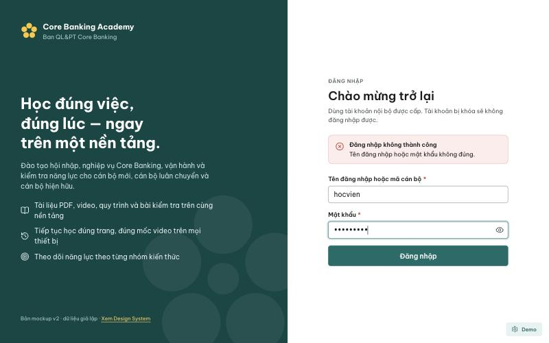
IDENTITY-CREDENTIALS_INVALID; FE hiện tiêu đề và message của backend.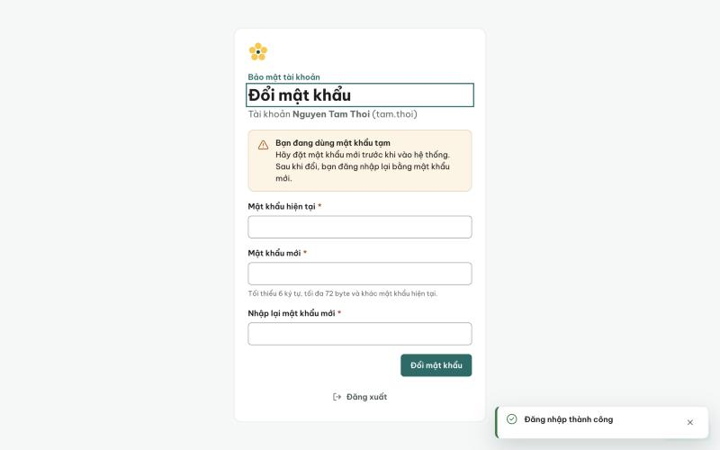
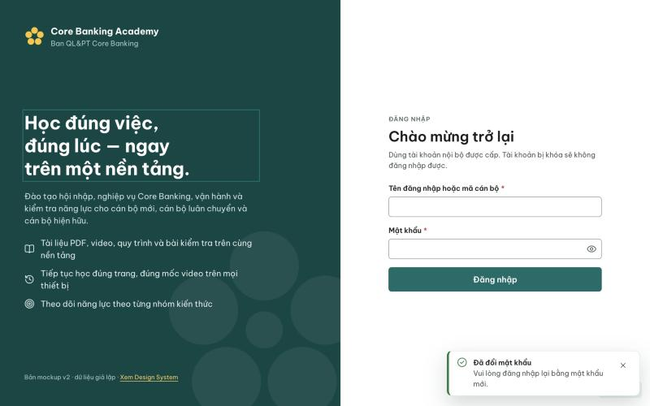
/login và báo “Đã đổi mật khẩu”.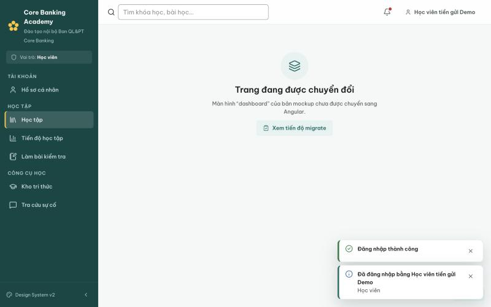
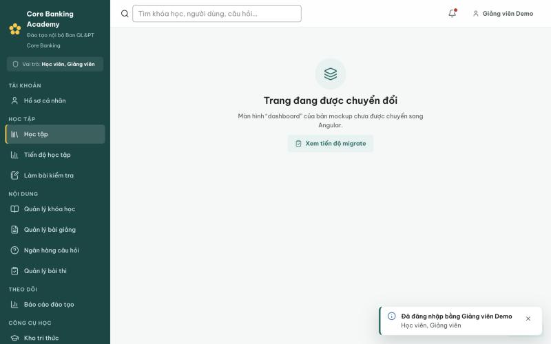
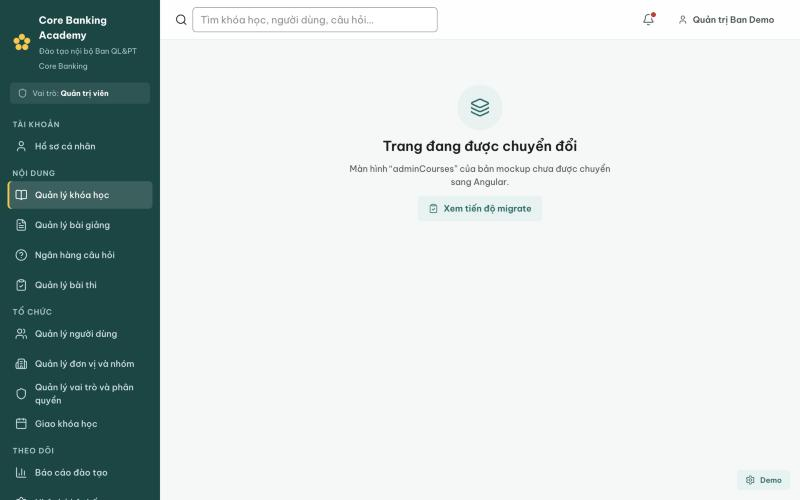
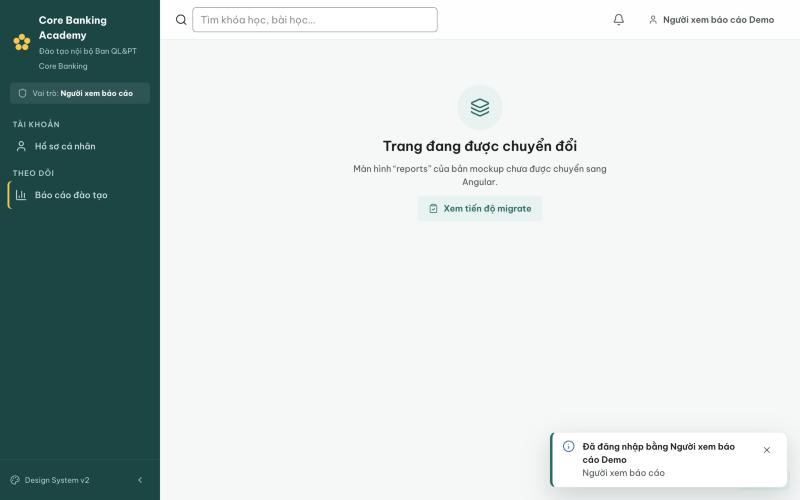
c2ea0bcfeatures/account/profile/*, shared/account/password-form/*,
shared/account/password-change.store.ts
| Tiêu chí | Trạng thái | Bằng chứng |
|---|---|---|
Form PATCH /auth/me chỉ gửi trường đổi; nút Lưu tắt khi chưa đổi gì |
Đạt | profile.spec.ts: PATCH diff, null khi xóa trường tùy chọn, Lưu bị tắt. Ảnh 07. |
| Tài khoản SSO chỉ đọc | Đạt | profile.spec.ts (quy tắc readonly của Signal Forms) |
| Khối chỉ đọc: tổ chức, nhóm, grant kèm nhãn scope | Đạt | Ảnh 07; nhãn scope dùng chung shared/status/scope-label.ts |
| Đổi mật khẩu 6 ký tự, tối đa 72 byte UTF-8, khác mật khẩu cũ; thành công thì đăng xuất về login | Đạt | password-form.schema.ts; spec “PUTs the two passwords, clears the token and returns to the login page”; ảnh 10 |
| Lỗi PASSWORD_POLICY, SAME_AS_CURRENT, CURRENT_PASSWORD_INCORRECT hiện dưới đúng field | Khác kế hoạch |
Theo quyết định D10, FE không gắn errors[] của BE vào field. Validator FE
kiểm cùng rule trước khi gọi; mật khẩu hiện tại sai là toast với message của BE (có
spec).
|
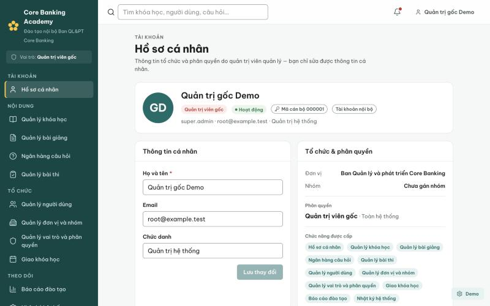
ef1dfe0features/admin-org/users/*, user-detail/*,
components/{user-form,user-editor}/*,
data-access/user-editor.store.ts,
libs/contracts/src/lib/identity/*
| Tiêu chí | Trạng thái | Bằng chứng |
|---|---|---|
Danh sách lọc, sắp xếp, phân trang trên server; cột role từ roleCodes |
Đạt Chưa kiểm với BE thật | users.spec.ts (18 ca) kiểm page 0-based, size, sort=id,asc, q, roleCode, orgId, teamId, status. Ảnh 02. |
| Drawer tạo: mã cán bộ, username, mật khẩu tạm, org và team phụ thuộc nhau, bảng grant ban đầu | Đạt | Spec kiểm body createUser và initialRoleGrants; trong trình duyệt tạo user 000099 với grant “Học viên · Cá nhân”. Ảnh 03, 04. |
| Drawer sửa gửi PATCH diff; cảnh báo khi đổi tổ chức | Đạt | Spec: Object.keys(body) chỉ chứa trường đổi; không gọi server khi không đổi gì |
Tạm dừng/Kích hoạt, Khóa/Mở khóa theo editable; trạng thái active, inactive, locked |
Đạt | Spec kiểm setUserStatus, hỏi xác nhận với inactive và locked, ẩn nút với chính mình và với admin khác |
| Chi tiết: tab Thông tin và Quyền gọi BE; tab Khóa học, Lịch sử thi, Hoạt động giữ mock (D6) | Đạt | user-detail.spec.ts (6 ca). Ba tab mock chỉ hiện khi mockApi bật. Ảnh 08. |
quantri.ban chỉ thấy user trong Ban và không sửa được quantri; grant lỗi thì không tạo user |
Đạt Chưa kiểm với BE thật | Hai quy tắc này do server quyết định; FE chỉ hiển thị. Đã kiểm trên FakeBackend (fake-backend.spec.ts), chưa kiểm trên backend thật. |
maxlength 100 trên ô tìm kiếm |
Một phần | Store cắt q còn 100 ký tự trước khi gửi; ui-search chưa có thuộc tính maxlength. |
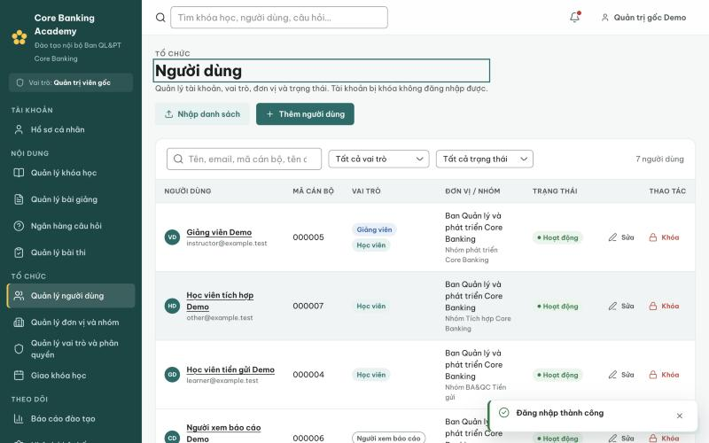
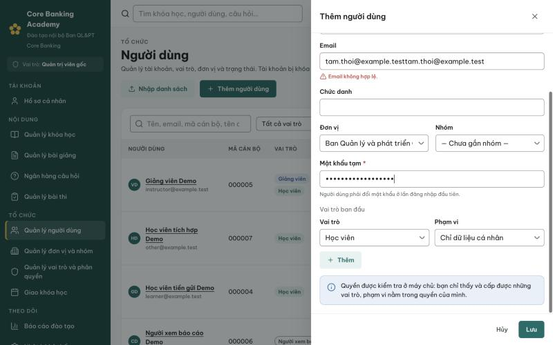
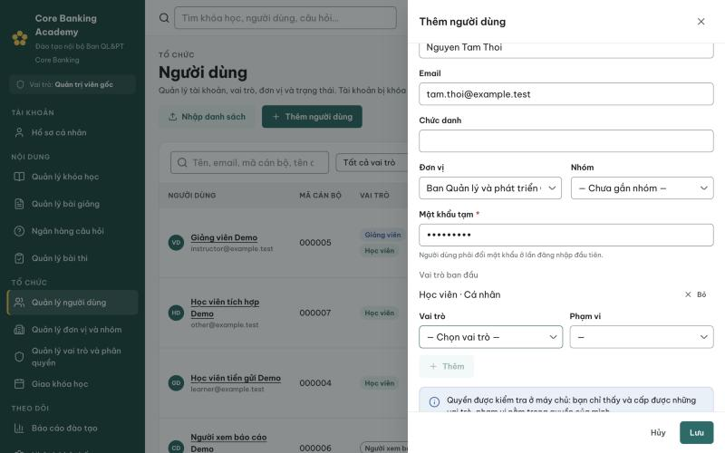
GET /api/v1/roles.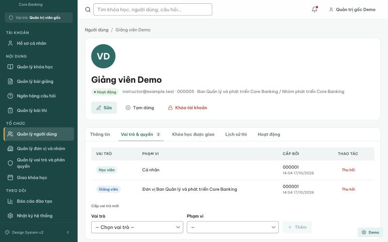
ef1dfe0components/grant-picker/*, roles/*,
roles/components/role-form/*
| Tiêu chí | Trạng thái | Bằng chứng |
|---|---|---|
| CRUD role giữ trên mock (D2); role form chọn theo mã function (D3) | Đạt | roles.spec.ts (12 ca) với 16 function code và id role mới. Ảnh 06. |
Selector cấp quyền đọc GET /api/v1/roles, không đọc danh sách mock |
Đạt | Drawer thêm người dùng liệt kê 5 role BE (id 1 đến 5, đọc từ trang trong trình duyệt); UserEditorStore.roles$ |
| Component chọn grant dùng chung (role, scope, target) cho drawer tạo và tab quyền | Đạt | grant-picker; xóa team khi đổi org; nút Thêm tắt đến khi chọn đủ |
Request cấp quyền là discriminatedUnion theo scope |
Một phần | GrantRequestSchema là object phẳng; picker chỉ gửi trường target đúng với scope. Chưa chặn ở mức kiểu. |
| ADMIN không cấp được ADMIN và SUPER_ADMIN; màn role đọc capability, không chỉ đọc menu | Chưa làm | Server từ chối và FE hiện toast. FE chưa đọc assignableScopes hay capability ADMIN_ROLE_GRANT để ẩn lựa chọn hoặc ẩn màn vai trò. |
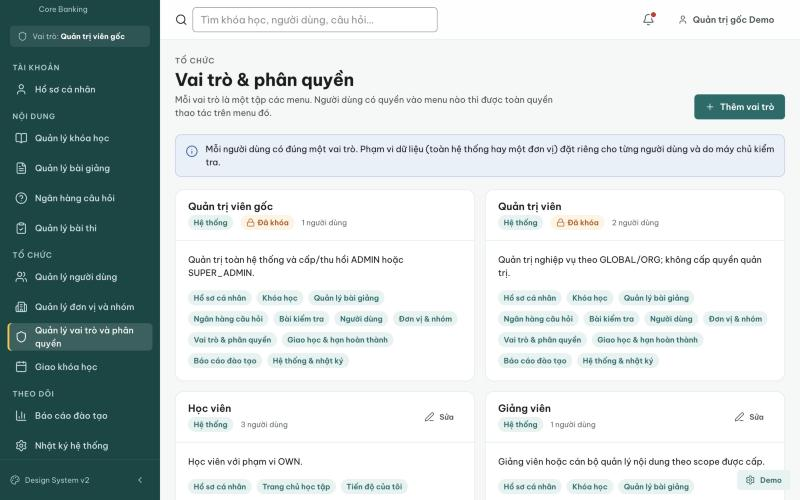
94a37fcfeatures/admin-org/org/{org,data-access/org.store,data-access/org-tree.store},
components/{org-form,team-form}/*
| Tiêu chí | Trạng thái | Bằng chứng |
|---|---|---|
Cây lazy: gốc qua rootOnly, con qua parentId, “Xem thêm” khi còn trang |
Đạt Chưa kiểm với BE thật | org.spec.ts kiểm rootOnly=true, tải con khi chọn, và tạo phòng mới hiện ngay trong cây (lỗi được phát hiện và sửa bằng reveal() khi viết spec). Ảnh 05. |
Panel: quản trị viên trực tiếp, nhóm phân trang, preview tối đa 5 người, “Xem tất cả” về /admin/users?teamId= |
Đạt | Spec kiểm trang 6 nhóm, page truyền sang trang sau, preview ≤ 5; UsersStore đọc ?teamId từ URL |
Form tổ chức và nhóm; sửa gửi PATCH diff; xóa nhóm báo TEAM_IN_USE |
Đạt | Spec: tạo nhóm, đổi tên (body chỉ có name), xóa nhóm trống, toast “Không thể xóa nhóm còn thành viên…” và nhóm vẫn còn trong danh sách |
| Ẩn tạo tổ chức và đổi trạng thái với ADMIN ORG | Đạt | Spec với quantri.ban; ảnh 14 (chỉ còn nút Sửa, Nhập từ tệp và Thêm nhóm) |
| Cây hiển thị đúng 1 Ban + 15 nhóm như sample; mã nhóm trùng báo lỗi tại field | Một phần | Cây 1 Ban và 15 nhóm đúng như seed (ảnh 05). Mã nhóm trùng hiện là toast, theo D10, không gắn vào field. |
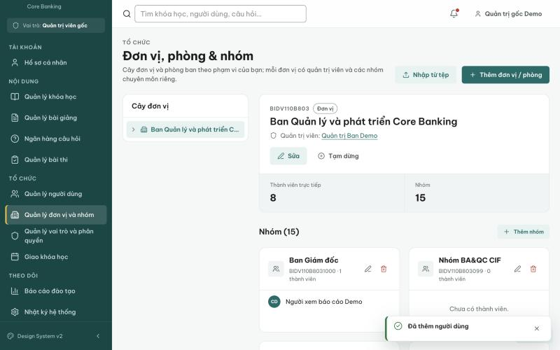
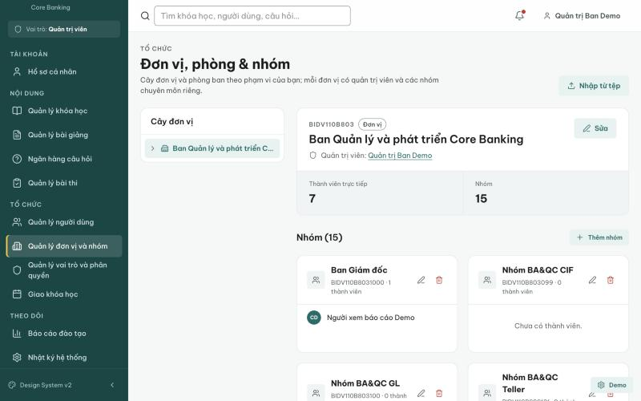
3d4795f, 04d5054, 1e3d3b4 (tài liệu)libs/mocks/src/lib/backend/{fake-backend,seed,seed-me,postman-requests}.ts,
libs/mocks/src/lib/backend-responses.ts,
core/dev/mock-api/*, core/config/app-config.ts
| Tiêu chí | Trạng thái | Bằng chứng |
|---|---|---|
| Fixture khớp seed BE: 1 org, 15 team, 7 user, grant, 5 role, 16 function | Một phần |
Seed viết tay trong seed.ts (549 dòng), đối chiếu bằng mắt với
~/Downloads/lms-sample-data (đếm khớp). Chưa có test đọc trực tiếp file
JSON mẫu, nên seed và dữ liệu thật có thể lệch mà test không báo.
|
| Mock trả lỗi đúng mã BE và đúng HTTP status thật | Một phần |
Endpoint của BE (identity, organization, auth v1) trả đúng status và envelope qua
backendRefusal(). Các endpoint mock-only (role CRUD, khóa học, lượt thi,
audit) vẫn dùng MOCK_REFUSAL_CODE = 'CORE-9999' và HTTP 200.
|
| Spec contract parse response mẫu của Postman | Đạt | postman.contract.spec.ts chạy cả bộ request của collection trên FakeBackend và parse mọi response bằng schema zod |
fixtures.spec.ts parse mọi ví dụ; bật/tắt mockApi không đổi hành vi màn |
Một phần | Fixtures parse đạt. Chưa chạy các màn với mockApi: false vì không có backend thật. |
| Spec màn chạy end to end trên backend giả | Đạt | provideMockBackendHttp() và signInToMockBackend(); spec theo dõi MockBackend.handle để kiểm params, query, body |
Hạn chế của chế độ mock: token nằm trong bộ nhớ của backend giả nên tải lại trang là mất phiên và về trang đăng nhập. Khi kiểm bằng trình duyệt phải điều hướng bằng liên kết trong app.
Chạy skill code-review với hai trục Standards và Spec trên git diff main...HEAD.
Spec là báo cáo đối chiếu cộng quyết định D1 đến D10. Mỗi phát hiện được kiểm lại với mã nguồn
và angular.md trước khi sửa. Kết quả sau sửa nằm ở commit 1e3d3b4;
npm run check xanh sau đó.
| Phát hiện | Xử lý |
|---|---|
Store ghi state ngoài setter (§5.2): org-tree, org, user-editor, users, user-detail |
Đã sửa Mỗi key có setter setX, lệnh chỉ gọi setter |
Signal ghi được ngoài state: teamPage, shown |
Đã sửa Đưa vào state dạng linkedSignal |
State trong component: danh sách grant chờ ở user-form; roles và grants ở profile |
Đã sửa Chuyển sang UserEditorStore và ProfileStore |
Gọi method trong template: roleName(code) |
Đã sửa Selector roleNames$ |
$ gắn vào hàm thường: currentUserId$ |
Đã sửa Đổi thành computed |
Trùng code: hai serverData tải team giống nhau |
Đã sửa Một hàm teamsOf |
Giá trị px cứng ở org.scss (2px) và user-detail.scss (110px) |
Bỏ qua Hai giá trị đã có sẵn trên main, không thuộc thay đổi này |
Mock “stateless” trong tài liệu trái với FakeBackend |
Đã sửa Viết lại phần mock và quyết định contract |
Tái xuất store khác (tree, roles$), smell Middle Man; PasswordChangeStore nằm trong shared/; OrgTreeStore gánh nhiều việc |
Chưa làm Đánh giá là judgement, ghi ở mục chưa làm |
user-editor.scss thiếu @use 'ui' |
Bỏ qua File chỉ có :host, không dùng token |
| Phát hiện | Xử lý |
|---|---|
D9: catalog và admin/catalog vẫn bị chặn theo function |
Đã sửa Chuyển vào open[]; sửa spec route-table và đăng ký migration |
Tài liệu cũ còn CORE-0401 và “stateless” |
Đã sửa |
| Seed chưa được kiểm trực tiếp với JSON mẫu | Chưa làm Ghi ở mục chưa làm |
Không có maxlength=100 ở ô tìm kiếm |
Một phần Store cắt 100 ký tự; ui-search chưa hỗ trợ thuộc tính |
Đường dẫn sidebar lấy từ FE thay vì route_pattern của BE |
Chưa làm Trùng với sample hiện tại; cần quyết định cách xử lý khi BE đổi route |
GrantRequestSchema phẳng, không phải union theo scope |
Chưa làm |
Chưa phản ứng với 403 PASSWORD_CHANGE_REQUIRED giữa phiên |
Chưa làm Chỉ hiện toast |
notifications nằm trong route mở ngoài danh sách D9 |
Giữ Màn có sẵn từ mockup, không có function BE; cùng loại với 11 màn kia |
MOCK_REFUSAL_CODE còn dùng cho endpoint mock-only |
Giữ Các endpoint này chưa có mã BE |
mockApi và
mockBackend đặt false, và so sánh với phản ứng của backend giả.
lms-sample-data và so với seed.ts sẽ bắt lệch dữ liệu.
IDENTITY-PASSWORD_CHANGE_REQUIRED giữa phiên
chưa có. Chỉ trường hợp mustChangePassword từ /me được chặn bằng guard.
errors[] vào envelope.
mockApi bật.
route_pattern của BE, union theo scope cho yêu cầu cấp
quyền, và maxlength trên ui-search chưa làm.
OrgStore đang lộ tree cho component;
UsersStore tái xuất roles$, orgs$;
OrgTreeStore gộp phân trang, dựng nút và chọn nút. Các điểm này không vi phạm
quy tắc cứng nhưng nên dọn khi có thêm màn dùng chung.
check-bundle đạt trong npm run check. Bản dev
báo tổng ban đầu 563 kB; đó không phải số của bản production.
npm run check # format, lint, typecheck, test, build, check-bundle npx nx serve lms # mock: đăng nhập bằng tài khoản seed, mật khẩu trong libs/mocks/src/lib/backend/seed.ts npx vitest run apps/lms/src/app/features/admin-org/org # ví dụ chạy riêng một spec
Tài khoản seed: super.admin, quantri, quantri.ban,
hocvien, giangvien, baocao, hocvien.tichhop.
Dev toolbar (nút “Demo” góc dưới phải) đăng nhập nhanh bằng các tài khoản này.